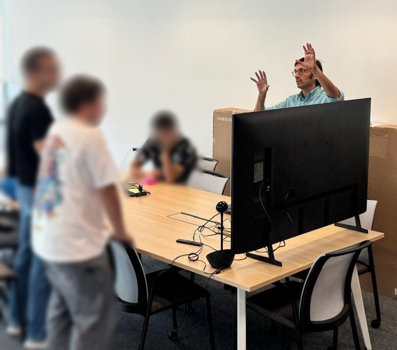

About me
I am a Computer Engineer specialized in Robotics, a generalist roboticist, and I have been working in this field since I finished my first degree in 2002. I hold a PhD in Robotics and Artificial Intelligence (2025).

Since 2009 I have helped grow a team of 2 into a 25-person department, where I now co-lead the technical direction. Along the way I assessed the technology and development process of 2 acquired companies, led a horizon team exploring technologies for future products, and redesigned the legacy robot platform software shared by our controllers, refactoring existing code step by step instead of starting from scratch. I have lived and worked in several cities in Spain and in Italy, spent a few months working in Kusatsu (Japan) and Chatsworth (California), and travelled regularly to Pleasanton (California) between 2016 and 2024.
I am curious and a quick learner, an analytical thinker with technical vision who sees the big picture, and a team player who also leads.
My interests include kinematics and dynamics, motion planning, software architectures for robots, mobile manipulators, cognitive robotics, learning, computational geometry and perception systems.
In my PhD, which I did independently alongside my full-time job, I worked on AI for robotics: how robots can learn behavior trees and use task planning, connecting high-level reasoning with low-level skills. This is the anchoring problem, a key problem for embodied AI and the area of AI and robotics that interests me most.
I am always open to discussing robotics and AI, as well as new challenges, so feel free to reach out to me by email at {% include email.html %}, or on X / Twitter or LinkedIn.